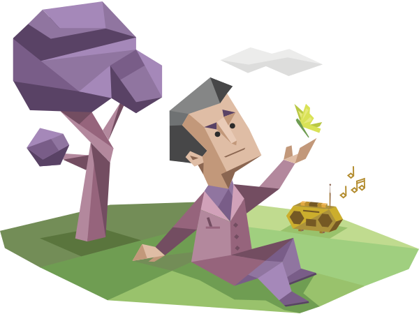
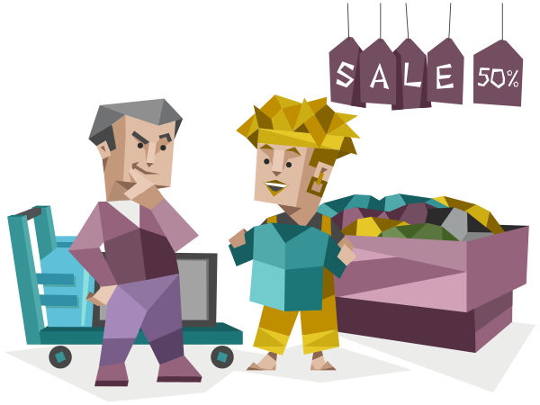

<div class="result-templete">
    <div class="result-card">
        <div *ngIf="result1" class="d-flex flex-column align-items-center justify-content-around">
            <h5>Your Personality Type is:</h5>
            <h1>{{perTitle !== '' ? perTitle : "Defender"}}</h1>
            <h4 style="color: rgb(0, 121, 177); font-weight: bold;text-transform: uppercase;">{{perType}}</h4>
            
            <span style="text-align: center;width: 70%; ">{{ perDes !== '' ? perDes : "Defenders are very dedicated and warm protectors, always ready to defend their loved ones" }}</span>
            </div>
            <h3 *ngIf="result2" class="col-12 text-center py-2">Energy</h3>
        <div *ngIf="result2" class="col-12">
            <div class="row m-0 p-0">
                <div class="col-12 col-md-6 d-flex justify-content-center align-items-center">
                    
                </div>
                <div class="col-12 col-md-6 px-5 ps-md-0 pt-3 pt-3 ">
                    <h1>66% Introverted</h1>
                    <div class="progress  "style="height:10px;">
                        <div class="progress-bar " role="progressbar" style="width: 34% ;background-color: rgb(207, 207, 207);" aria-valuenow="15" aria-valuemin="0" aria-valuemax="100"></div>
                        <div class="progress-bar bg-success" role="progressbar" style="width: 66%" aria-valuenow="30" aria-valuemin="0" aria-valuemax="100"></div>
                      </div>
                      <div class="d-flex justify-content-between my-3">
                        <span class="fw-bold"><div>34%</div> <span>EXTRAVERTED</span></span>
                        <span class="text-success fw-bold"><div class="text-end">66%</div> <span>INTROVERTED</span></span>
                      </div>
                    <span  style="text-align: center;">Introverted individuals tend to prefer fewer, yet deep and meaningful, social interactions and often feel drawn to calmer environments.</span>
                </div>
            </div>
        </div>
            <h3 *ngIf="result3" class="col-12 text-center py-2">Mind</h3>
        <div *ngIf="result3" class="col-12">
            <div class="row">
                <div class="col-12 col-md-6 d-flex justify-content-center align-items-center">
                    
                </div>
                <div class="col-12 col-md-6 px-5 ps-md-0 pt-3">
                    <h1>80% Observant</h1>
                    <div class="progress  "style="height:10px;">
                        <div class="progress-bar bg-success" role="progressbar" style="width: 80%" aria-valuenow="30" aria-valuemin="0" aria-valuemax="100"></div>
                        <div class="progress-bar " role="progressbar" style="width: 20% ;background-color: rgb(207, 207, 207);" aria-valuenow="15" aria-valuemin="0" aria-valuemax="100"></div>
                      </div>
                      <div class="d-flex justify-content-between my-3">
                          <span class="text-success fw-bold"><div >80%</div> <span>OBSERVANT</span></span>
                        <span class="fw-bold"><div class="text-end">20%</div > <span>INTUITIVE</span></span>
                      </div>
                    <span style="text-align: center;">Observant individuals are pragmatic and down-to-earth. They tend to have a strong focus on what is happening or very likely to happen.</span>
                </div>
            </div>
        </div>
            <h3 *ngIf="result4" class="col-12 text-center py-2">Nature</h3>
        <div *ngIf="result4" class="col-12">
            <div class="row">
                <div class="col-12 col-md-6 d-flex justify-content-center align-items-center">
                    
                </div>
                <div class="col-12 col-md-6 px-5 ps-md-0 pt-3">
                    <h1>70% Thinking</h1>
                    <div class="progress  "style="height:10px;">
                        <div class="progress-bar " role="progressbar" style="width: 70% ;background-color: rgb(207, 207, 207);" aria-valuenow="15" aria-valuemin="0" aria-valuemax="100"></div>
                        <div class="progress-bar bg-success" role="progressbar" style="width: 30%" aria-valuenow="30" aria-valuemin="0" aria-valuemax="100"></div>
                      </div>
                      <div class="d-flex justify-content-between my-3">
                        <span class="fw-bold"><div>70%</div> <span>THINKING</span></span>
                        <span class="text-success fw-bold"><div class="text-end">30%</div> <span>FEELING</span></span>
                      </div>
                    <span style="text-align: center;">Observant individuals are pragmatic and down-to-earth. They tend to have a strong focus on what is happening or very likely to happen.</span>
                </div>
            </div>
        </div>
            <h3 *ngIf="result5" class="col-12 text-center py-2">Tatics</h3>
        <div *ngIf="result5" class="col-12">
            <div class="row">
                <div class="col-12 col-md-6 d-flex justify-content-center align-items-center">
                    
                </div>
                <div class="col-12 col-md-6 px-5 ps-md-0 pt-3">
                    <h1>78% Prospecting</h1>
                    <div class="progress  "style="height:10px;">
                        <div class="progress-bar " role="progressbar" style="width: 22% ;background-color: rgb(207, 207, 207);" aria-valuenow="15" aria-valuemin="0" aria-valuemax="100"></div>
                        <div class="progress-bar bg-success" role="progressbar" style="width:78%" aria-valuenow="30" aria-valuemin="0" aria-valuemax="100"></div>
                      </div>
                      <div class="d-flex justify-content-between my-3">
                        <span class="fw-bold"><div>22%</div> <span>JUDGING</span></span>
                        <span class="text-success fw-bold"><div class="text-end">78%</div> <span>PROSPECTING</span></span>
                      </div>
                    <span style="text-align: center;">Prospecting individuals are very good at improvising and adapting to opportunities. They tend to be flexible nonconformists who value novelty above stability.</span>
                </div>
            </div>
        </div>
            <h3 *ngIf="result6" class="col-12 text-center py-2">Identity</h3>
        <div *ngIf="result6  " class="col-12">
            <div class="row">
                <div class="col-12 col-md-6 d-flex justify-content-center align-items-center">
                    
                </div>
                <div class="col-12 col-md-6 px-5 ps-md-0 pt-3">
                    <h1>60%  Turbulent</h1>
                    <div class="progress  "style="height:10px;">
                        <div class="progress-bar " role="progressbar" style="width: 40% ;background-color: rgb(207, 207, 207);" aria-valuenow="15" aria-valuemin="0" aria-valuemax="100"></div>
                        <div class="progress-bar bg-success" role="progressbar" style="width: 60%" aria-valuenow="30" aria-valuemin="0" aria-valuemax="100"></div>
                      </div>
                      <div class="d-flex justify-content-between my-3">
                        <span class="fw-bold"><div>40%</div> <span>ASSERTIVE</span></span>
                        <span class="text-success fw-bold"><div class="text-end">60%</div> <span>TURBULENT</span></span>
                      </div>
                    <span style="text-align: center;">Turbulent individuals are self-conscious and sensitive to stress. They feel a sense of urgency in their emotions and tend to be success-driven, perfectionistic, and eager to improve.</span>
                </div>
            </div>
        </div>
            <h3 *ngIf="result7" class="col-12 text-center">One more thing...</h3>
        <div *ngIf="result7" class="col-12 col-md-6" >
            <div class="row">
                <div class="col-12 px-5 px-md-0">
                    <p>Before we move on to your profile, would you like an email copy of your results?</p>
                    <p style="color: rgb(145, 145, 145);">We’ll save your results so you can easily access them again.</p>
                    <input class="form-control" type="email" placeholder="Your@email.com" name="" id="">
                      
                    <label  class="mt-3" style="text-align: start; cursor: pointer;">
                      <input style="cursor: pointer;" type="checkbox" name="" id="">  Send me Virtuoso tips and research insights</label>
                </div>
            </div>
        </div>
        <div class="card-footer">
            <div >
                <span  (click)="backTab()" class="text-primary fw-bold " style="width: 150px; cursor: pointer;"> Back</span>
            </div>
            <div class="dots-div" >
                <div class="dots" [ngClass]="{ 'active-dot': result1 }" (click)="onTabClick('result1')"></div>
                <div class="dots" [ngClass]="{ 'active-dot': result2 }"(click)="onTabClick('result2')"></div>
                <div class="dots" [ngClass]="{ 'active-dot': result3 }" (click)="onTabClick('result3')"></div>
                <div class="dots" [ngClass]="{ 'active-dot': result4 }" (click)="onTabClick('result4')"></div>
                <div class="dots" [ngClass]="{ 'active-dot': result5 }" (click)="onTabClick('result5')"></div>
                <div class="dots" [ngClass]="{ 'active-dot': result6 }" (click)="onTabClick('result6')"></div>
                <div class="dots" [ngClass]="{ 'active-dot': result7 }" (click)="onTabClick('result7')"></div>
            </div>
            <div>
                <button class="btn btn-primary  button-next"  (click)="nextTab()">Next</button>
            </div>
        </div>

    </div>
</div>